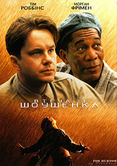

Темний лицар/The Dark Knight(2001)
Головна сторінка
Фільми
Мультфільми
Оцінка на IMDb :
9.0/10
Режисер:
Крістофер Нолан
Сценарист:
Крістофер Нолан, Девід Гоєр, Джонатан Нолан
Короткий опис:
Коли загроза, відома як Джокер, сіє хаос серед жителів Готема, Бетмен повинен прийняти одне з найбільших психологічних і фізичних випробувань - боротися з несправедливістю.
Хрещений батько
Втеча з Шоушенка

 Хрещений батько
Хрещений батько